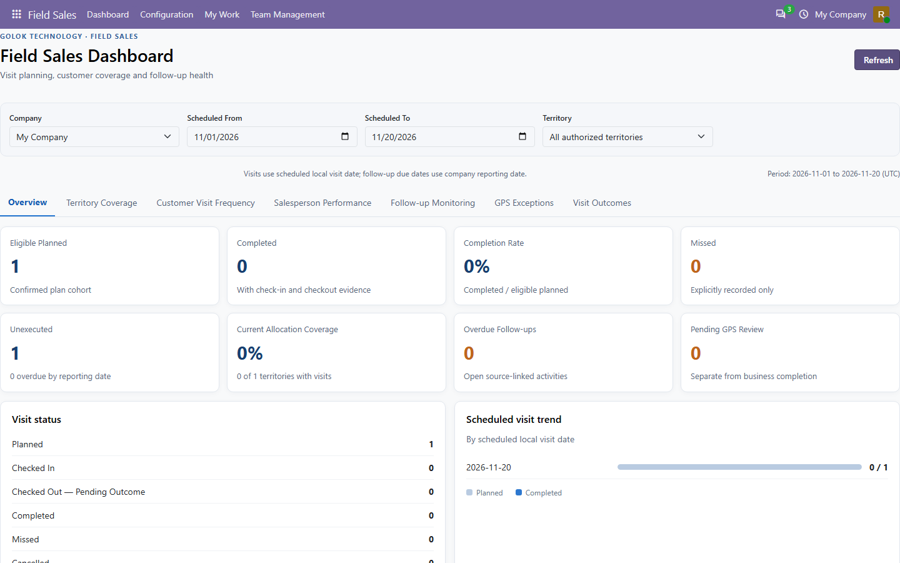
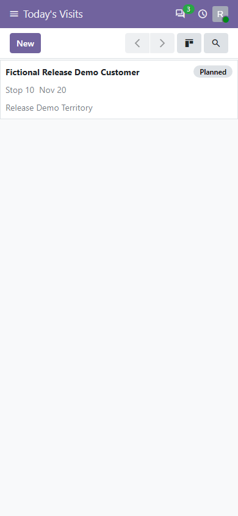

Plan with territory context
Use company-scoped territories, customer allocations, daily plans, and a manually ordered visit sequence.
Plan Territory Visits. Verify Field Activity. Never Lose the Next Follow-up.
Coordinate customer visits, record field execution, capture meeting outcomes, and keep next actions visible to the team.
Unstructured daily routes, unclear customer ownership, missed follow-ups, and incomplete visit history make field work hard to coordinate. Keep planning, execution, meeting results, and next actions connected in Odoo.
Use company-scoped territories, customer allocations, daily plans, and a manually ordered visit sequence.
Capture server-timestamped check-in and checkout with browser-reported location assessment and explicit exceptions.
Record a structured result and create a traceable Odoo follow-up activity when needed.
A practical workflow for salespeople and managers, with visit history and company-scoped reporting.
Assignments and customer allocations keep daily plans grounded in company and territory scope.
Arrange customer stops manually and retain planning history through supported changes.
Assess device-reported coordinates against configured customer locations and accuracy policy.
Route missing, inaccurate, or mismatched observations for authorized manager review.
Capture customer feedback, objections, product interests, and explicit missed-visit reasons.
Link next actions to visits using standard Odoo activities and assigned owners.
Review visit performance, customer coverage, outcomes, follow-ups, and exception status.
Export authorized business reports in CSV and, when dependencies are installed, XLSX.
Screens captured from the exact packaged addon running in Odoo, using fictional demonstration records. GPS and meeting-result UI screens are not shown in this listing draft.


Compare planned, completed, missed, and unexecuted visits; inspect customer coverage and overdue follow-ups; and review GPS exceptions as a separate operational signal. Metrics describe field activity, not revenue or employee worth.
Application roles work alongside Odoo company and record access.
Execution timestamps, location assessments, and manager reviews remain distinct records.
Location is requested for user-initiated visit actions; no continuous tracking is provided.
Browser GPS is device-reported and may be inaccurate or spoofed. A manager-approved exception is not a verified proximity result. HTTPS is required for browser geolocation in normal deployments. No native mobile app, offline synchronization, or background tracking is included.